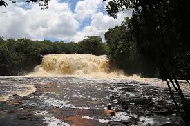
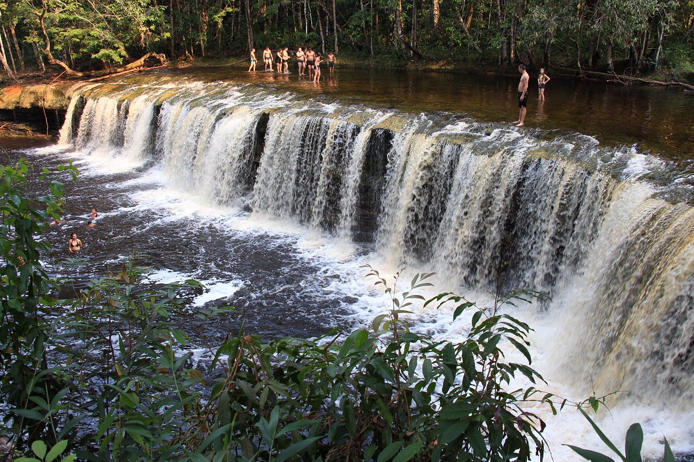
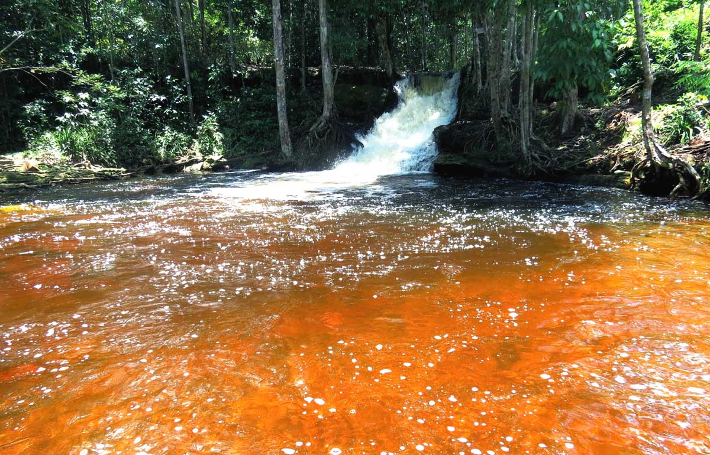
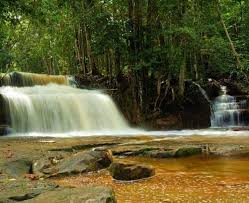

Iracema
Localização:
À aproximadamente 12,6 km do centro de Presidente Figueiredo, além de uma trilha de aproximadamente 300m.
Descrição:
A Cachoeira de Iracema é uma das mais impressionantes da região, famosa por seu grande volume de água e cenário imponente. O acesso à cachoeira é feito por uma trilha tranquila que serpenteia pela floresta, revelando várias grutas fascinantes ao longo do caminho, como a Gruta da Catedral. Ao redor da cachoeira, o visitante encontrará um espaço amplo, ideal para descanso e lazer, imerso na exuberante vegetação amazônica. A água é sempre convidativa, oferecendo uma oportunidade refrescante. Contudo, recomenda-se cautela ao entrar, devido às pedras escorregadias.
Desafios:
Apesar de sua beleza, a Cachoeira de Iracema enfrenta alguns desafios em termos de infraestrutura. Banheiros e áreas de alimentação são frequentemente criticados pela falta de manutenção e pelos preços elevados.
Experiência:
Visitar a Cachoeira de Iracema oferece uma conexão única com a natureza, proporcionando uma experiência inesquecível em meio à selva amazônica.
Confira os horários;
Natal
Localização:
À aproximadamente 13km do centro de Presidente Figueiredo, contando com uma trilha de aproximadamente 50m.
Descrição:
A Cachoeira Natal é uma das mais belas atrações em Presidente Figueiredo, conhecida por sua deslumbrante queda d'água e ambiente natural exuberante. O acesso à cachoeira é feito por um ramal que oferece aos visitantes a oportunidade de vivenciar a rica flora e fauna da região. Durante a época de cheia, a força da água é impressionante, criando um espetáculo visual que encanta todos os que visitam.
Desafios:
O acesso ao local pode ser complicado, especialmente em períodos de chuva, quando o ramal fica lamacento. A infraestrutura ao redor da cachoeira é limitada; não há restaurantes ou banheiros disponíveis, o que exige que os visitantes levem seus próprios suprimentos.
Experiências:
Visitar a Cachoeira Natal é uma experiência memorável, marcada pela beleza natural e a sensação de aventura. Ao chegar, os visitantes podem se maravilhar com a paisagem e desfrutar de momentos de lazer, seja nadando ou relaxando à sombra das árvores.
Confira os horários;
Orquídeas
Localização:
À aproximadamente 8,7km do centro de Presidente Figueiredo, contando com uma trilha de 1,5km.
Descrição
A Cachoeira das Orquídeas é um dos belos atrativos naturais de Presidente Figueiredo, localizada em uma área de preservação ambiental. A entrada é gratuita, mas controlada pelo município. Para chegar até a cachoeira, os visitantes percorrem uma trilha de aproximadamente 1,5 km, que é feita sob a sombra das árvores da Floresta Amazônica.
Desafios
A trilha de 1,5 km pode ser difícil, especialmente em dias chuvosos, quando o chão pode ficar lamacento e escorregadio. Não há infraestrutura de restaurantes ou banheiros nas proximidades, então os visitantes devem levar seus próprios suprimentos.
Experiência
Visitar a Cachoeira das Orquídeas proporciona uma experiência única de conexão com a natureza. Os visitantes podem desfrutar do som relaxante da água caindo e da exuberante flora ao longo da trilha.
Confira os horários;
Asframa
Localização
À aproximadamente 11,2km do centro de
Descrição
A cachoeira não é uma das mais impressionantes da cidade, mas se destaca pelo fácil acesso a partir de Manaus, o que a torna uma das mais visitadas. Ela conta com uma infraestrutura adequada para turistas, com estacionamento amplo e espaço para banho. Ideal para famílias, especialmente com crianças pequenas.
Desafios
A limpeza é um ponto de crítica recorrente, sendo que muitos visitantes mencionam o descuido com a higiene das mesas e do lixo. Além disso, o local tende a ficar muito cheio nos fins de semana e feriados devido à sua popularidade.
Experiência
Os turistas recomendam o local para famílias, devido à pouca profundidade do rio, ideal para banho. Além disso, a possibilidade de entrar atrás da queda d'água proporciona uma experiência única para fotos e vídeos.